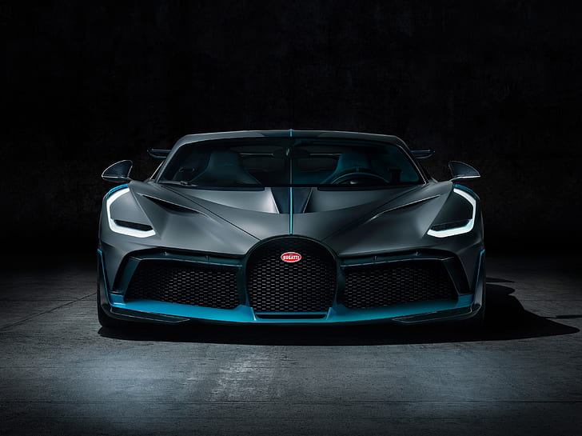
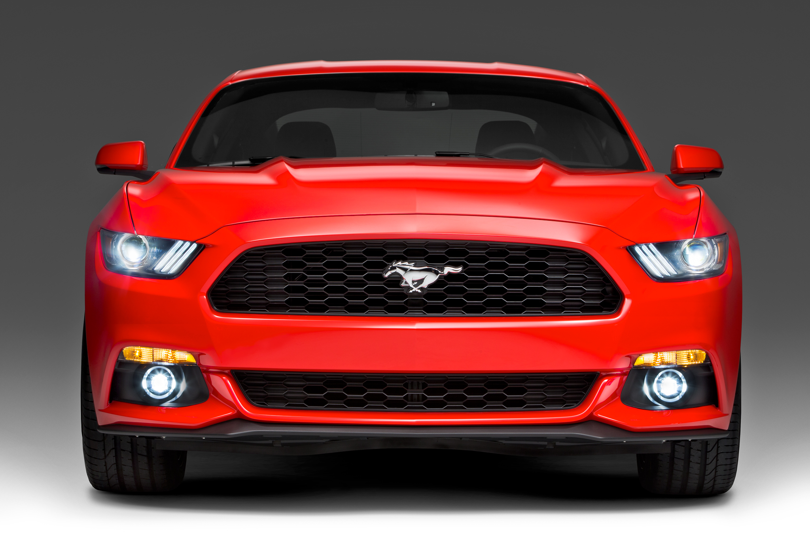
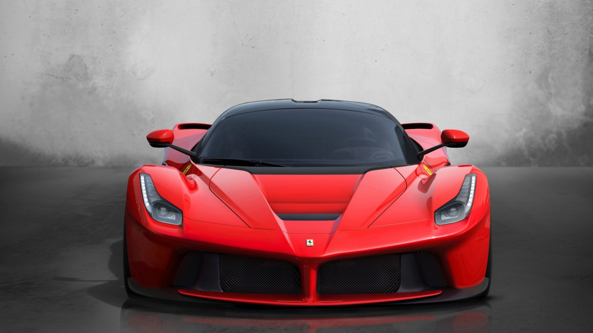
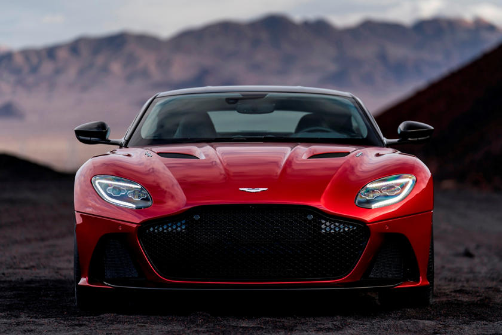
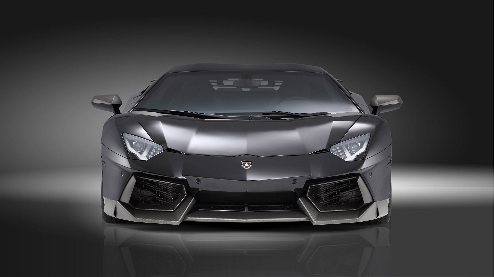
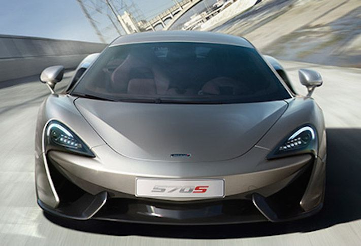
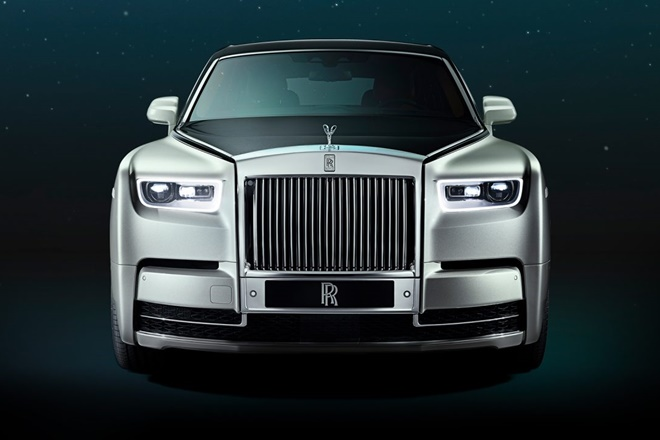

| Image |
Car |
Specifications |
Ratings |
|  |
Bugatti Divo |
The Bugatti Divo is a mid-engine track-focused sports car developed and
manufactured by Bugatti Automobiles S.A.S. The car is named after French racing driver Albert Divo, who
raced for Bugatti in the 1920s winning the Targa Florio race twice. |
9.0/10.0 |
.jpg) |
BMW i8 |
The BMW i8 is a plug-in hybrid sports car developed by BMW. The i8 is part of
BMW's electric fleet "Project i" being marketed as a new sub-brand, BMW i. The 2015 model year BMW i8
has a 7.1 kWh lithium-ion battery pack that delivers an all-electric range of 37 km (23 mi) under the
New European Driving Cycle. |
7.5/10 |
.jpg) |
Mercedes-AMG GT |
The Mercedes-AMG GT (C190 / R190) is a sports car produced in coupé and
roadster bodystyles by German automobile manufacturer Mercedes-AMG. The car was introduced on 9
September 2014 and was officially unveiled to the public in October 2014 at the Paris Motor Show. |
8.0/10 |
|  |
Ford Mustang |
The Ford Mustang is an American car manufactured by Ford. It was originally
conceived by Lee Iacocca. The Mustang debuted in 1964 with a price of $2,368, with estimated annual
sales of 100,000. First year sales were over 400,000 units and one million within two years. |
8.5/10 |
| 
|
Ferrari 812 |
The Ferrari 812 Superfast (Type F152M) is a front mid-engine, rear-wheel-drive
grand tourer produced by Italian sports car manufacturer Ferrari that made its debut at the 2017 Geneva
Motor Show. |
8.0/10 |
|  |
ASTON MARTIN VANTAGE |
Aston Martin primarily operates on three sites. The headquarters and main
production of its sports cars and grand tourers are in a 22-hectare (55-acre) facility in Gaydon,
Warwickshire, England, on the site of a former RAF V Bomber airbase alongside one of Jaguar Land Rover's
development centres. |
7.5/10 |
|  |
Lamborgini Aventador |
The Lamborghini Aventador is a mid-engine sports car produced by the Italian
automotive manufacturer Lamborghini. In keeping with Lamborghini tradition, the Aventador is named after
a fighting bull. |
9.0/10 |
|  |
McLaren Senna |
McLaren's main focus while designing the Senna was to achieve faster lap times.
In order to do so, McLaren developed a lightweight design that incorporated aerodynamic elements. |
7.5/10 |
| 
|
Rolls-Royce Phantom VIII |
The Rolls-Royce Phantom VIII is a full-sized luxury saloon manufactured by
Rolls-Royce Motor Cars. It is the eighth and current generation of the Rolls-Royce Phantom, and the
second launched by Rolls-Royce under BMW ownership. It is offered in two wheelbase lengths. |
6.5/10 |